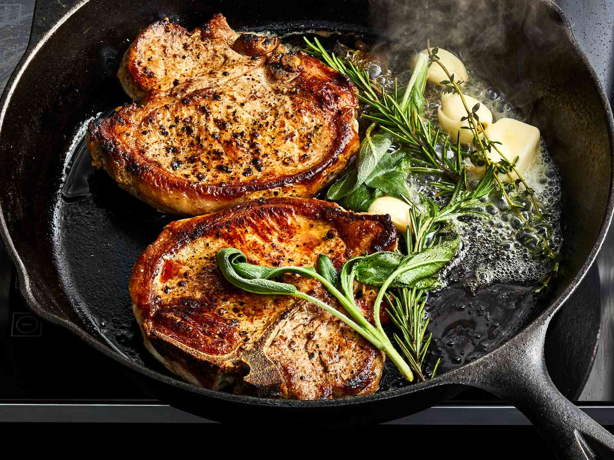

Herb Porkchop

Mouthwatering butter and herb porkchops.
This quick and easy recipe is sure to be a midweek hit!
Ingredients
- Porkchops
- Garlic
- Butter
- Rosemary
- Flour
- Asparagus
- Potato
Method
Cooking Time: 30 Minutes
Feeds: 4
- Lightly dust the pork chops in flour, salt and pepper
- Fry on high heat for 5 minutes on each side
- Throw chopped garlic and rosemary into pan and fry lightly until browned
- Mix in chicken stock and butter and simmer for 3 minutes
- Put pork chops back into the pan and baste
- Mash potato
- Steam asparagus
Homepage